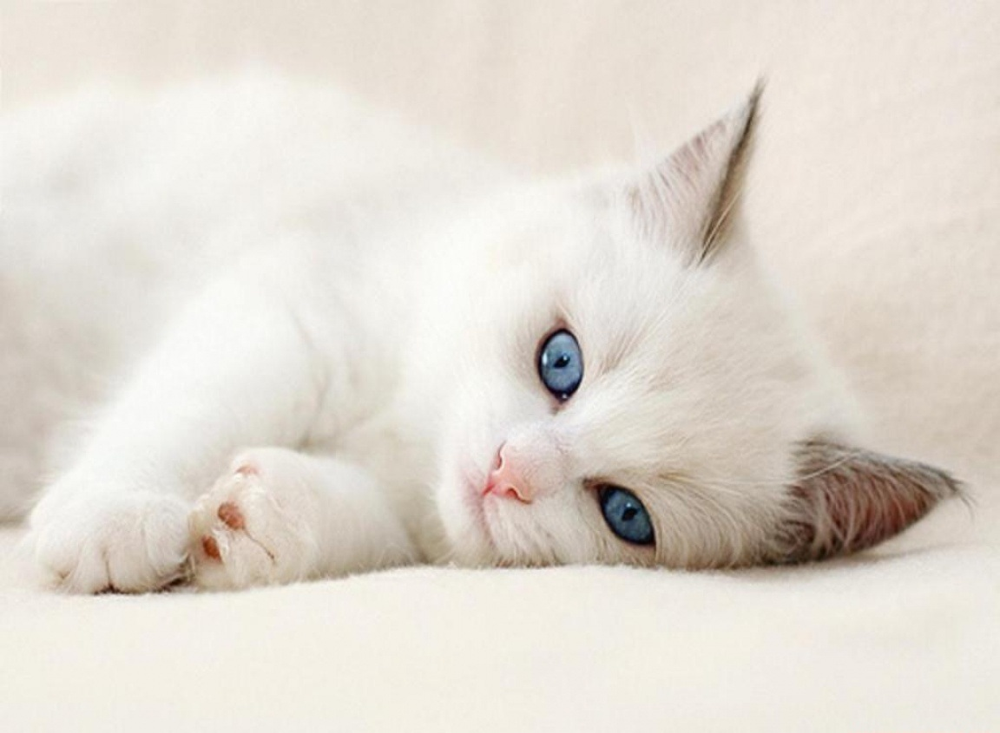

La vida de Glottis
.jpg)
En un cálido día de enero de 2009, en la encantadora ciudad de Córdoba, Argentina, nació un pequeño gatito blanco al que sus dueños, Sergie Code y su familia, decidieron llamar Glottis. Desde sus primeros momentos de vida, Glottis demostró una curiosidad inigualable y una personalidad carismática que pronto se ganaría el corazón de todos los que lo rodeaban.

A medida que Glottis crecía, su curiosidad lo llevó a descubrir su amor por el tango, un género musical emblemático de Argentina. Siempre que escuchaba los seductores acordes del tango, se balanceaba elegantemente y jugueteaba como si estuviera danzando al ritmo de la música. La pasión de Glottis por el tango lo conectó profundamente con la cultura de Buenos Aires, donde este género florecía en cada rincón de la ciudad.
A medida que Glottis maduraba, desarrolló una curiosa afición: el dinero. Se sentía inexplicablemente atraído por el brillo de las monedas y los billetes. Su dueño, Sergie code, solía contar anécdotas sobre cómo Glottisjugueteaba con monedas que caían al suelo y las empujaba con sus patitas como si estuviera acumulando una pequeña fortuna. Esta peculiaridad lo convirtió en el centro de atención en todas las reuniones familiares y entre amigos.